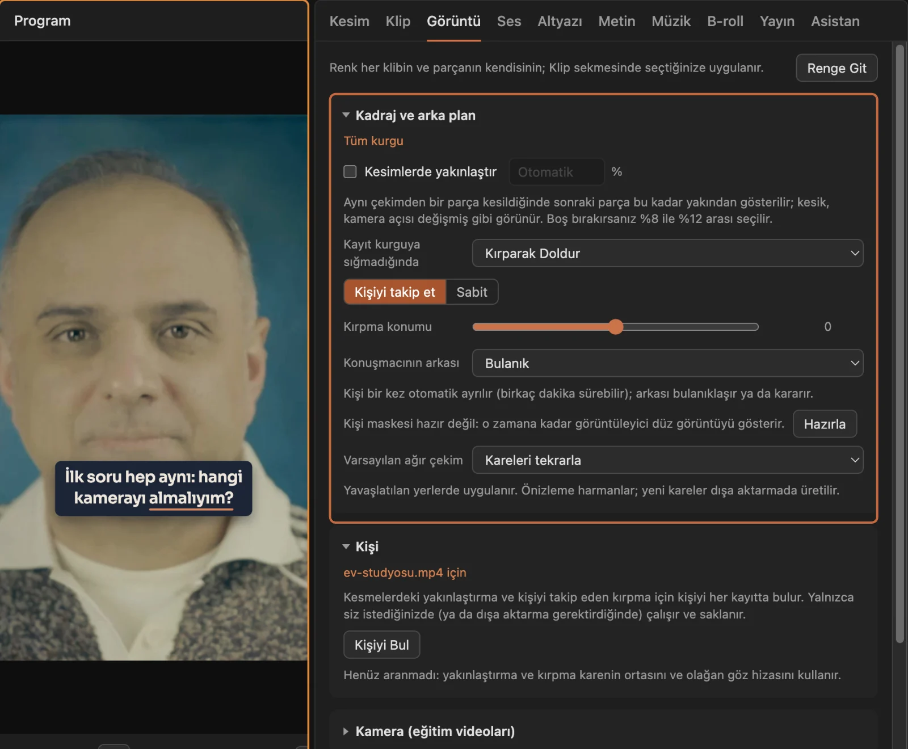

Görüntü
Görüntü sekmesi videonun nasıl kadrajlanacağını ayarlar: biçimini, kırpmanın yerini, arkanda ne olacağını. Her klibin rengi Klip sekmesinde.

Biçim
Biçim üst çubukta seçilir: Yatay 16:9, Dikey 9:16 ya da Kare 1:1. Kayıt biçime sığmıyorsa Kırparak Doldur ya da Kenar Boşluğuyla Sığdır'ı seç.
Kadraj ve arka plan
- Kişiyi takip et, sen hareket ettikçe kırpmayı sende tutar; diğer seçenek Sabit. Kırpma konumu sabit kırpmayı kaydırır.
- Kişi: Kişiyi Bul her kayıtta seni arar; seni takip eden kırpma ve kesimlerdeki yakınlaştırma için. Bu bilgisayarda yalnızca sen istediğinde (ya da bir dışa aktarma gerektirdiğinde) çalışır ve saklanır.
- Konuşmacının arkası: Olduğu gibi, Bulanık ya da Karartılmış. Kişi bir kez bulunur; birkaç dakika sürebilir.
Kesimlerde yakınlaştır
Aynı çekimden bir parça kesildiğinde Kesimlerde yakınlaştır sonraki parçayı biraz daha yakından gösterir; kesim kamera açısı değişmiş gibi görünür. Boş bırakırsan %8 ile %12 arası seçilir.
Kamera ve çoklu kamera
Aynı sekmede, ekran kaydıyla eşleşmiş bir kamera için Kamera (eğitim videoları) (Ekran eğitimleri) ve geniş bir çekimde her kişi için yakın bir kadraj yapıp konuşana kesen Sanal çoklu kamera (Çoklu kamera ve konuşmacılar) var.
Varsayılan ağır çekim, kendi ayarı olmayan her klipte yavaşlatılan görüntünün nasıl doldurulacağını seçer.
Renk
Renk her klibin ve parçanın kendisinin: birini seç ve Klip sekmesinde ayarla. Renge Git seni oraya götürür (Renk).
Buradaki her şey izleyicide canlı görünür ve dışa aktarmada kullanılır.